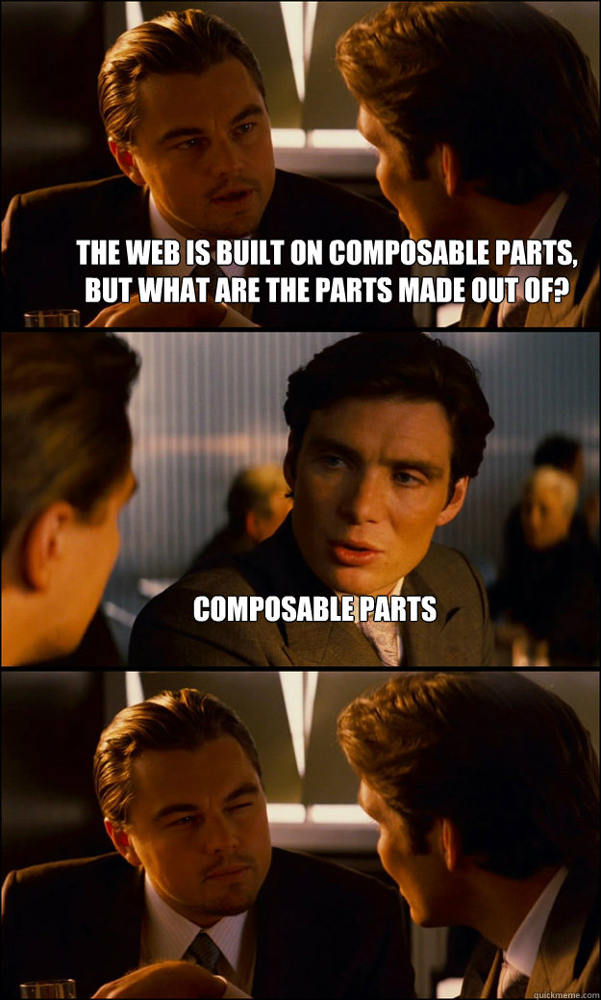
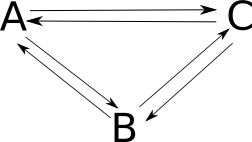
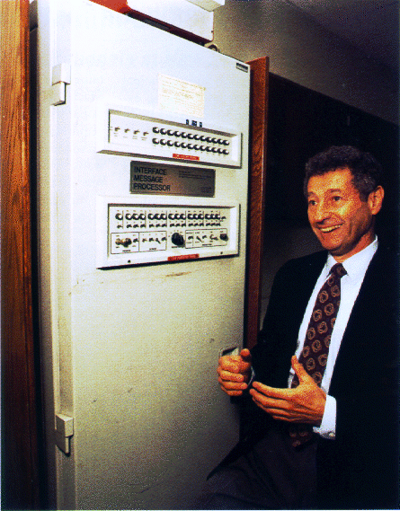
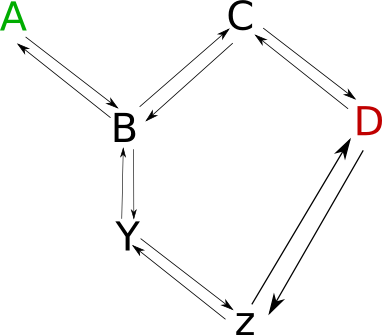

Internet
Table of Contents
- 1 The Web Is Built On The Internet
- 2 We Use These Phrases
- 3 Internet Architecture is Composable
- 4 Two Computers Need to Communicate
- 5 Three Computers Need to Communicate
- 6 Circuit Switching
- 7 Network
- 8 ARPANET :: Network
- 9 Packet Switching
- 10 Trade-offs
- 11 Internet Protocol
- 12 Internet Protocol
- 13 Packets travel over networks
- 14 IP Address
- 15 Routing
- 16 Ethernet
1 The Web Is Built On The Internet
2 We Use These Phrases
- "Connects to server"
- "Sends response to client"
- "Closes the connection"
What do they mean?
3 Internet Architecture is Composable two_col

- Emphasize flexibility
- Allow for growth, incremental adoption
- Interchangeable parts
4 Two Computers Need to Communicate
- String a wire between them
- Send bits across
- Wait for response?
4.1 Imagine notes
- A time before the Internet and Web
- Wire could be connected in anyway
- Bit could be sent in anyway
- Other computer may respond, may not
5 Three Computers Need to Communicate
Get more wire

5.1 Wires notes
- Multiple wires between computers?
- One sending, one receiving?
- Each computer hooked up to every other, no message passing
- Mostly workable
- Disadvantage: what happens when you want to connect another computer?
6 Circuit Switching two_col
- New computer joins network: wire it up
- Switch the electronic circuit
6.1 Electronic circuits notes
- Very similar to phone "networks": wire up the two parties
- Doesn't scale well, but can be fine for small networks
- Computers better when multiple can communicate: conference line
7 Network two_col
- Now we have a network
- Mostly computer-to-computer
- How to we communicate between networks?
7.1 Problems notes
- Can't put whole world on same medium
- Composability: allow different LAN to work independently
- Need some way to address computers that is independent from local network
8 ARPANET :: Network two_col
- Circuit Switching -> Packet Switching
- Relied on Interface Message Processors (IMPs)
- Government, no commercial traffic

8.1 Details notes
- First pass: academic inter-network
- Instead of connecting on same medium, use packets that were routed to a destination with IMPs
- Installation planned at 9 months
- Speed 50 kbit/second (home cable is 245x faster)
- loading yelp.com would take ~19 seconds
- but wouldn't have fit into memory
- IMPs were early routers, but more complexity: added reliable routing
9 Packet Switching two_col
- Send small packets of information
- Addressed to a receiver
- Can share medium
9.1 Postal notes
- More similar to post mail than circuit switched telephones:
- Address a small packet/letter to a person/address
- All mail handled by the same middle layer
10 Trade-offs
- Big, expensive IMPs required
- Connection to LAN up to owners
- Couldn't handle multiple connections
10.1 Communication notes
- Can't rely on the sophistication of the carrier network
- Can't all be carrying around IMPs
- But we'd still like to send packets of data over some link
- IMPs only expected networks to talk to each other, not applications on specific hosts
- So next iteration designed to solve these problems
11 Internet Protocol
- Moves much responsibility to host software
- Keeps packet switching and routing
- Adds concept of ports
11.1 End-to-end notes
- End-to-end principle: application-specific functionality must reside on end-hosts, because they know exactly what is required
- Many of the limitations of ARPANET were not able to be composed with new solution because all of the logic was in the big iron
- Packet switching was a great idea.
12 Internet Protocol
- Where is the destination? (host addressing)
- How do I get there? (routing)
- Stateless!
12.1 IP notes
- Simplify: tease apart central concepts to implement composability
- Best effort delivery: send it off and hope for the best
- Don't even guarantee we got the same data!
- Very simple, but flexible enough to build on top of
- But one of the first things stipulated about the Web was we either expect the data to show up, or see an error. How does that happen?
13 Packets travel over networks two_col
- Packets sent to Yelp from ischool
- Destination is specified with a number (IP address)
- Routing is done by forwarding to the next best network

13.1 Routing Details notes
- We want to send data to Yelp. But where is Yelp?
- Happens to be in SF, but what if it moves?
- Networks hand off to the next network it thinks is "closer" to Yelp
- That network hands it off… etc.
- Until we get to Yelp
- Lots of problems can happen:
- No route to host
- It can go different ways
13.2 traceroute
harbinger:~$ traceroute yelp.com traceroute to yelp.com (199.255.189.160), 30 hops max, 60 byte packets 1 g3-35.inr-211-srb.Berkeley.EDU (128.32.78.3) 0.960 ms 1.151 ms 1.056 ms 2 t6-1.inr-202-reccev.Berkeley.EDU (128.32.255.126) 0.930 ms 1.068 ms 1.194 ms 3 xe-5-1-0.inr-001-sut.Berkeley.EDU (128.32.0.66) 17.730 ms 17.766 ms 17.687 ms 4 dc-sfo-agg-1--ucb-10ge.cenic.net (137.164.50.16) 1.554 ms 1.596 ms 1.552 ms 5 svl-agg2--sfo-agg1-10g.cenic.net (137.164.22.27) 3.430 ms 3.392 ms 3.291 ms 6 dc-oak-core1--svl-core1-ge-1.cenic.net (137.164.46.213) 4.361 ms 3.971 ms 3.992 ms 7 dc-paix-px1--oak-core1-ge.cenic.net (137.164.47.18) 5.479 ms 5.370 ms 5.189 ms 8 abovenet--paix-px1-ge2.cenic.net (198.32.251.78) 5.613 ms 5.519 ms 5.567 ms 9 xe-3-0-0.cr1.sjc2.us.above.net (64.125.31.66) 7.367 ms 7.501 ms 7.345 ms 10 xe-0-0-0.cr2.sjc2.us.above.net (64.125.30.126) 6.403 ms 6.287 ms 6.261 ms 11 xe-0-1-0.mpr4.sfo7.us.above.net (64.125.26.61) 7.303 ms 7.264 ms 7.240 ms 12 209.66.115.62.t01325-02.above.net (209.66.115.62) 7.326 ms 7.279 ms 7.318 ms 13 www.sfo1.yelp.com (199.255.189.160) 7.356 ms 7.293 ms 7.407 ms
14 IP Address
- Numbers, often represented as "dotted decimal" (199.255.189.160)
- But can also be represented as just a number (3355426208)
- IPs assigned by Internet Assigned Numbers Authority
14.1 IPv4 notation notes
- "IP" short for "IP Address"
- "dotted quads"
- IP version 4 : 32 bit, IPv6 : 128 bit
- IANA typically assigns ranges, then delegated out
- ischool gets an IP from a range assigned to Berkeley, which has a range assigned to UC system (example)
15 Routing
- Border Gateway Protocol tracks routes to IPs
- ISPs manually configure peers to share information
- Routers use BGP to forward packets
15.1 More information notes
- Routing and peering big topics, please follow up with a networking class if you're interested
- Take-away: networks can communicate with each other even if not directly connected: packets are forwarded along
16 Ethernet two_col
- All computers on the same physical medium
- "Frames" addressed to a receiver
- Interruptions happen with re-tries

16.1 Trade-offs notes
- Don't have to wire new computers up with separate cables
- Still have to wire computers on the same physical line
- All computer recieve all messages – just choose to ignore the ones not for it
- Implications about security, bandwidth
- Ethernet just one type of LAN, now dominate